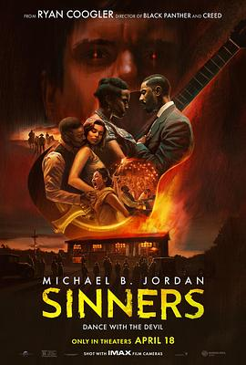

7.6
罪人
Sinners
2025
美国
评分 7.6
导演:
瑞恩·库格勒
演员:
迈克尔·B·乔丹 / 海莉·斯坦菲尔德 / 杰克·奥康奈尔 / 乌米·马萨库 / 杰米·劳森 / 奥玛·本森·米勒 / 德尔罗伊·林多
类型:
剧情,恐怖,惊悚
剧情简介
在密西西比河畔一个沉睡的小镇上，久别重逢的双胞胎兄弟以为他们回家是为了救赎，却意外揭开了隐藏在血脉中的诅咒。影片开篇，夜色中一辆卡车驶入破败的农庄，灰尘中传来低沉的祈祷声。艾萨克（迈克尔·B·乔丹 饰）与伊莱兄弟相视无言，他们以为离开多年已与过去断绝关系，却没想到——真正的“罪人”，从未被埋葬。瑞恩·库格勒将宗教象征与心理恐怖融合，构建出一个关于“原罪与继承”的现代寓言。兄弟俩回到家乡，面对破碎的家族与迷信的教会。村民们以虔诚之名掩盖暴行，牧师的布道像诅咒一样在空气中回荡。随着他们挖掘旧屋地窖，家族秘密逐渐浮出水面：多年前的教堂大火、母亲的自焚、以及一部被封印的“罪人之书”，都指向一个被遗忘的真相。影片以克制的叙事节奏层层推进。光影设计充满隐喻：闪烁的烛火、阴影中的十字架、雨夜闪电中的幻象，让现实与梦魇无缝交织。迈克尔·B·乔丹在片中奉献了极具压迫感的表演——他饰演的艾萨克在愤怒与恐惧之间反复拉扯，试图救赎弟弟，也试图逃离自己内心的魔鬼。而海莉·斯坦菲尔德饰演的神秘女子艾玛，成为引导兄弟走向真相的“光”，却也可能是诱向深渊的“影”。随着剧情深入，兄弟发现教会正在举行一场名为“赎夜”的仪式——信徒们相信通过献祭“罪人血脉”便能净化村庄。仪式之夜，黑暗降临，小镇的钟声在血雾中回荡。兄弟间的羁绊在恐惧中被撕裂，爱与背叛、信仰与堕落、神与魔的界线彻底崩塌。《罪人》是一部具有强烈象征意味的宗教心理惊悚片。瑞恩·库格勒在延续其社会现实主义风格的同时，将恐怖片推向哲学层面：人是否能真正摆脱祖辈的罪？赎罪与复仇，究竟哪个更接近救赎？结尾，艾萨克凝视燃烧的教堂，低声念出那句贯穿全片的台词——“我们祈求宽恕，却从未学会原谅自己。”